2006-03-22T00:00:00 (Wed)
福岡遠征レポート
3月の19日から21日まで，私“か”は何気に福岡へ行っておりました(^^;
今回の旅の目的は花映塚の対戦会オフと，ふちけんさん，わかさん，sue445さんとのオフをすることでした．
そういうわけで，そのオフ会のレポートをまとめてみようと思います．
以下，花映塚オフではない，本来の目的のオフの方を，総称して「九州襲撃オフ」としますｗ
ちなみに，今回お会いした方のそれぞれのサイトは以下のリンクからどうぞ．
九州襲撃オフ関連の方
・ほなにーどっとこむ（ふちけんさん）
・節穴。（わかさん） #結局会えなかった orz
・sue445.net（sue445さん）
花映塚オフ関連の方
・Parallel closet（木村圭さん：主催）
・無限旋律（としさん）
そもそも今回の旅行のきっかけは，九州へふちけんさんとわかさんに会いに行きたいなぁ〜と2006年になってから思い始め，春先か夏辺りに行こうかな，と漠然と考えていたことでした．すると丁度そこへ振って湧いてきたかのように3月19日に北九州で東方花映塚の対戦会オフが開催されることになりました．これはいい機会だと思い，福岡へ行くついでに対戦会オフにも参加しよう，ということになり，今回の旅行計画が具体的に持ち上がったわけです．それが確か2月の頭くらい．そして色々と考えた末に，タイムテーブルが組めました．
ところで，これ実は本来は18日から21日までの4日間旅行しようと思ってたんですよ．で，福岡までの交通手段は徳島からだと飛行機しかなかったんで，スカイメイト使って行こうとしてたんです．そしたら，18日は予約満席 orz ツアー団体*2はマジやめて反則 orz しゃーないのでその日はトンボ帰り．ゲーセン行ってQMA3の大会見たりアイマスやったりしてました．
（いやでもむしろQMA3の大会とかアイマスとかの方が熱かったし楽しかったんで，ぶっちゃけ「しゃーない」とか言いながらも嬉しさの方が大きかった(ノ∀｀)）
そんなこんなで，18日は丸一日遊び呆けて，翌日19日．この日は無事飛行機に乗れましたよ(´∀｀)
徳島空港出発が8:45で，10:25に福岡空港に到着．地下鉄で博多駅まで行き，sue445さんと合流．その後，時間は早いほうがいいだろうということで，特急に乗って折尾駅（対戦会オフの待ち合わせ場所）まで行くことに．
道中，列車内でsue445さんのポケダン（ポケモン不思議のダンジョン青の救助隊）のデータを見せてもらいました．どう見ても廃人でした．本当にお疲れ様でした m(_ _)m プレイ時間が約380時間で，「かつやくのあと」がランダムイベント1つを除いて全部埋まってるとか，もうほんとおかしい(ノ∀｀) エンディング見ただけで売ってしまった自分とは大違いですｗ あ，自分はついこないだポケダンが3kで買い取ってもらえるということが判明したので，大喜びして売ってまいりましたｗ
（ちなみに後でsue445さんからMSNメッセでメッセージが飛んできて，「今は390になってます」とのことです．はいはい，廃人廃人ｗｗｗｗ）
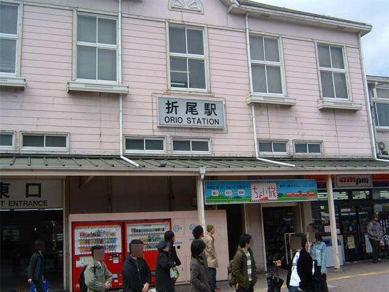
で，30分ほど電車に揺られて折尾駅到着．
そこでその日対戦会に参加するメンバーのうち，木村圭さん，刃崎鋭さん，らぴどさんと合流．そしてしばらくしてとしさんとも合流し，オフ参加メンバーが集結したことに．
まずは予定していた通り，会場近くのとんかつ屋さんへ昼食を食べに行くことになりました．

ここで何を間違ったか，皆が日替わり定食（670円）のを頼んでいる中で，一人だけ極上ロースカツ定食（1220円）を頼んでいるバカが一人．
はい，俺です orz
や，せっかく旅行してるんだから，ひんそーなモン食って後悔しないようにしておこうと適当に考えて注文しました．どう見てもAFOです．日替わり定食にしておけば，600円近く浮いていたんですよ！？ つまり6週活動可能ですよ！！？ ああ，もったいない orz そして何においてもアイマスのプレイ料金に置き換えてしまう私マーメイド．だが、よし！JOJO！それでいいっ！それがBEST！（by リサリサ）
そして昼ご飯を済ませ，オフ会場の公民館へ．
凄く広かったです．明らかにキャパシティ大きすぎｗ まあもともと40人まで呼ぶ予定の企画だったんで，そうなったんでしょうがｗ とりあえず，6人でダラダラしても恐ろしく有り余る広さがありました．お花見会の会場よりも大きかったです．
で，対戦会オフのことですが，自分は予選では割と勝てたものの，決勝リーグ敗れてしまい景品もらえず．
（ちなみに予選とか決勝リーグとか，6人でやったんですからね(^^; ええｗ）
（6人の総当たり戦が予選で，予選の上位4人が決勝トーナメントで優勝争いｗｗｗｗ 規模小せええｗｗｗｗ）
まあ後は烈華伝とかゆかりんファンタジア絶叫とかえーりん！えーりん！とかやったり．なんというか，対戦会オフっていうよりかは，友達同士で集まって，ちょっと気合入れて対戦しまくってた，って感じでした．終始和やかでした．“オフ会を楽しむ”という意味では，肩肘張ったもん負けだった気がしますｗ
で20時に解散．木村さん，らぴどさんとは会場ですぐに別れ，刃崎さんに駅まで送ってもらいました．で，駅で刃崎さんとも別れ，sue445さん，としさんと共に，博多駅へ快速で向かうことに．ちなみにまた自分はそこで屋台のたこ焼きとたい焼き買ってしまうとかいう浪費をブッこきました orz しかもそのたい焼きがあんまりおいしくなかったというツラスな状況(^^; あー，アイマス代に回しておけばよかｔｔ（ｒｙ
ちなみにここで乗った快速が途中で止まった駅の一つに「千早駅」がありました．
とりあえず「千早ーッ！ち，ちはぁああ！」と叫んでおきました．
鹿児島本線の千早駅です．また福岡近くのプロデューサーさんは是非（ぉ
そして1時間足らずして博多駅に到着．そこでとしさんとも別れました．
花映塚オフの皆様，この日は本当にお疲れ様でした．またいつかどこかで会える機会があればいいですね．
（…というのも，もうしばらく福岡には行かないつもりなんで(-_-;) 飛行機代テラ高ス orz アイマス代に（ｒｙ ）
その後sue445さんと福岡交通センタービルという建物へ夕食をとりに行くことに．ちなみに，この建物は色々と反則でした．
というのも，入っている店舗がおかしい．
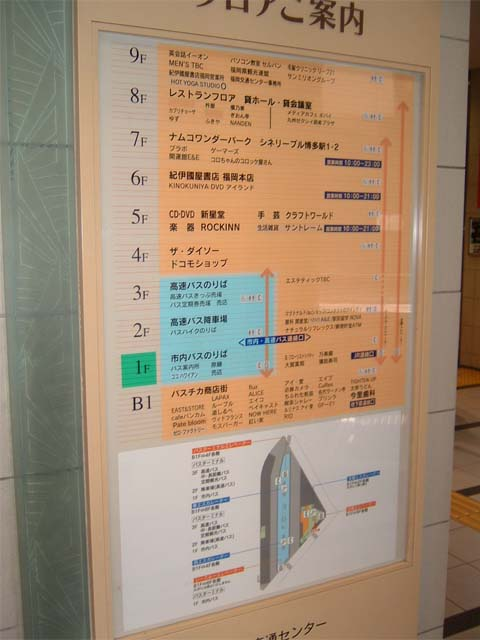
2F マクドナルド
4F ダイソー
6F 紀伊国屋書店
7F ナムコワンダーパーク，ゲーマーズ
何このレパートリー．下手すりゃ一日中この建物でいられるじゃん(´∀｀) まあふちけんさんはシューティングが無いからこのゲーセンはあんまり行かないとか言ってたような気がしますが，アイマスがあるから全ていいじゃないか！と思う私マーメイｄ（ｒｙ
で，マックで夕食を軽く済ませ，ここでいよいよsue445さんともお別れ．別れの挨拶の「また明日」ってのが笑えましたｗ
さて，自分が福岡へ来た真の目的と言っても過言でもない仕事を済ませに行きますか，ということで，さっそく交通センタービル7Fのプラボへ直行する私マーメ（ｒｙ
ちなみにセンモニ，サテなど，アイマスの周辺状況は以下の写真のようなものでした．
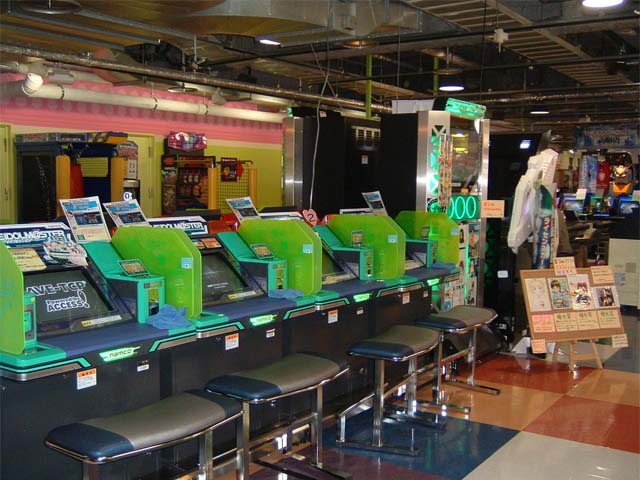 
何気にサテは8台も．
 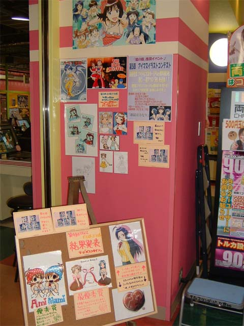
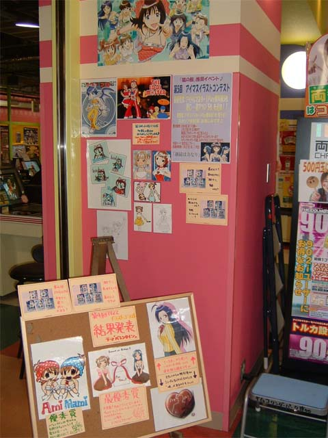
なんかイラストコンテストやってたみたいですね．
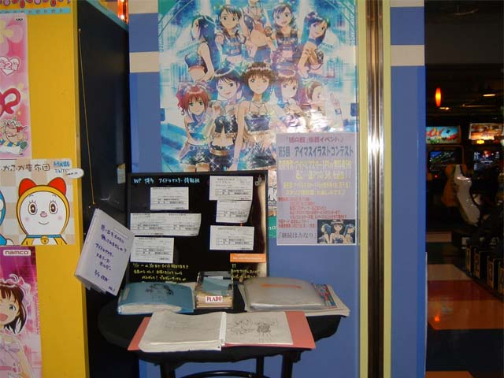
やっぱりこれは必須アイテムでしょう，「コミュニケーションノート」．とりあえず徳島から来ましたよ〜，と書き込みしてきました(´∀｀)
さて，そんなこんなで事務所履歴に「プラボ福岡交通センター」を刻み付け，ふちけんさんと連絡をとり合流することに．
で，博多駅で待つこと10分程．長身の男性の姿をしたふちけん神，現る．
この人は色々とやってることが神なので，神なのです（イミフ 裸足にサンダルという，3月の夜とは思えないスタイルで「いや，どうせすぐだから」と言ってる辺りもうなんか常人とは違います(ノ∀｀) 色々とカッコエエわぁｗ そしてその部屋のカオスっぷりも尋常ではありませんでした．この部屋からあのゲームの各種やりこみプレイ集も生まれたのですね(´∀｀)
そして，その日は色々と私の趣味に合わせてくれた本（ToHeart2いいんちょ本，こ〜ちゃさん本など）を見せてもらったり，花映塚をちょろっと対戦したり，Filn や mixi の日記を書いたりして，早々と寝ました．次の日は福岡市内を色々と散策する予定だったので，体力を回復させておく必要があったので…
で，その翌日，20日．朝9時頃起きるとふちけんさんはいませんでした．仕事に先に行っているので，好きな時間に起きて好きな時間に家を出てください，と言われていたのですが，いくらふちけんさんの弟がいたとはいえ，いい加減ですのぅｗ
まぁお陰でふちけんさんが仕事行くのと同時に家を出る必要がなかったので助かったのですが．
さて，この日の予定は昼からsue445さんと天神のヲタショップ巡ることと，それまでに福岡を巡っておくことでした．
のそのそと起き出し，身支度を整えて早速家を出発．am.pm.で朝食を調達し，博多駅から地下鉄に乗り唐人駅まで突っ走る．
まず，第一の目的は福岡ドームを写真に取ることでした．や，別に亜美真美のハプニングロケ再現とかはどうでもよかったんですが，せっかく福岡まで来たんだから，ちょっとは名所っぽいところも回っておこうと思って行ってきたんです．
前回はほんと東京でヲタの交流をしてきただけだったからなぁ… orz
東京タワーも国会議事堂も，なーんも見ないで帰ってきたもんだから，ほんともったいないことしたと思ったんですよｗ で，今回はその反省を活かして，そういうことをしてみたわけです．結果的には，楽しかったですよ，名所（？）巡り．
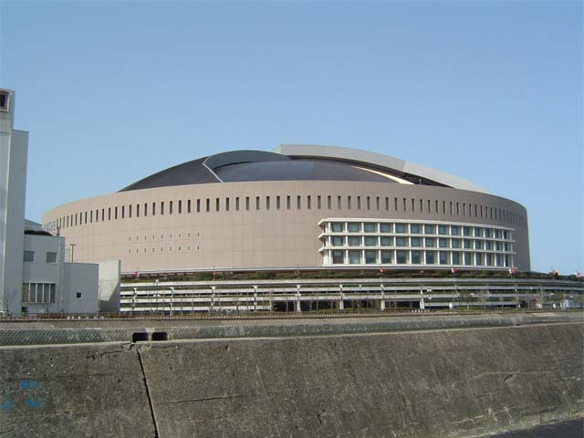 
以前なんかの写真かテレビだかで見たのと同じ建物でした．
当たり前なんですけど，こういう感動っていいですよね，なんか旅行っぽくて（旅行だろ
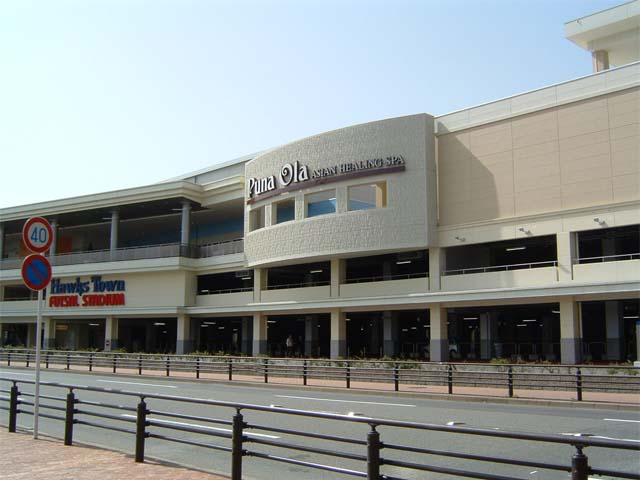 
ちなみに，何気に福岡ドーム前のショッピングモールにプラボがあったんですよ．でも，アイマスは設置されてませんでした．ああ，ここにあったら，もう更に1軒回れてたんだよなぁ… 惜しい orz
ところで，後から聞いた話，ふちけんさんの職場がこの辺にあったらしいんです．で，昼休み（私が訪れた2時間くらい後）にここに太鼓の達人をしに来てたんだとかｗ なんてニアミス(ノ∀｀)
さてさて，ここで私に困ったことが起こりました．実を言うと名所ってここしか思いつかなかったんですよねｗ 「困ったことが起こりました」っていうより，「やっぱり困ったことになってしまった」って感じｗ さっき福岡ドームが第一の目的とか言ってたけど，これが最初で最後の目的地だったのですよｗ おほほほ，うーむ，どうしよう(^^; このまま地下鉄で天神まで行ったら，時間余るしなぁ…
…ここで，天から聞いてはいけない声を聞いてしまう俺．
歩いて天神まで行けばいいじゃん．途中でなんかあるっしょ．
ということで，突発やよい企画！
「『うんむ，歩いて30分というところだね．』
『社長の足ならそのくらいかと．』
『ええっ！？歩いて行かれるんですか！？5kmくらいありますよ？』」
開始〜！（長ッ
で，途中で見つけたもの第一弾．大濠（おおほり）公園．
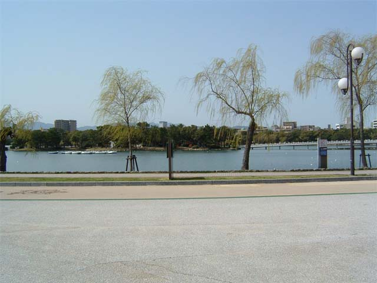 

なんかカップルが多かったです．まぁ，自分もいつも隣にはやよいと春香と律子と（中略）がいたりするんですがね．
さあ，次の目的地へ歩こうか，やよい．
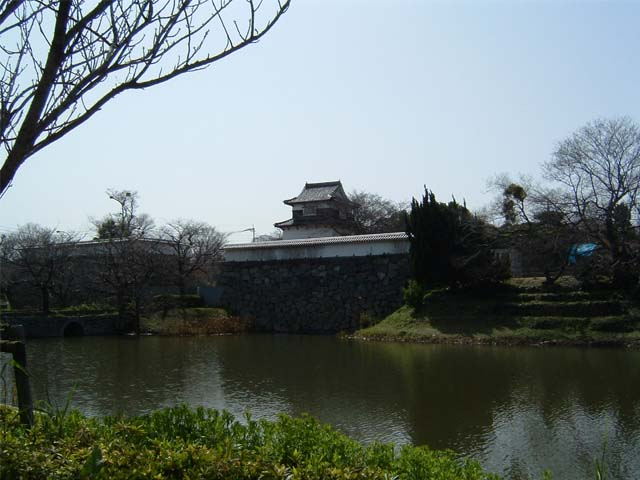
見つけたもの第二段．福岡城跡．
いや，それだけっす．ほんとこれだけでした(ノ∀｀) 資料館とかねえのかよｗ（自分が見つけられてないだけの可能性高いですが）
ちなみに，このすぐ近くに中学校があったのですが，中学校と聞いただけでやよいを連想してしまった自分はもうダメだと思った orz
…で，終わりです．早い… 天神にはすぐ着いちゃったのよｗ 他には特に何もありませんでしたｗ
まあ，福岡市内をぶらぶら出来ただけでも，ちょっと楽しかったのでよしとしますわ．
さて，いよいよ旅行二日目昼の部，「sue445さんと行く〜天神ヲタロード練り歩き祭」開始〜．
まずはメロンブックスへ．そこでアイマスの同人誌を5000円分くらい買う俺．
次にとらのあなへ．そこでまたアイマスのﾄ同人誌を3000円分くらい買う俺．
そして最後にアニメイトへ．そこでまたまたアイマス関連のグッズを8000円分くらい買う俺．
…いくらサモから頼まれた分買ってるとはいえ，これは酷い orz

で，これが自分の分（帰宅後撮影）
品物は同人誌8冊，携帯ストラップ，キーホルダー，携帯の窓拭きで，これって結構すごい値段だと思う orz
…ていうかここで帰りの飛行機代無くなった(ノ∀｀)
念のために，ということで持ってきたお金に手を出すことになるとは思いませんでしたｗ
そして昼食はもちろんメイド喫茶で済ませ，天神GIGOへアイマスをしに行くことに！
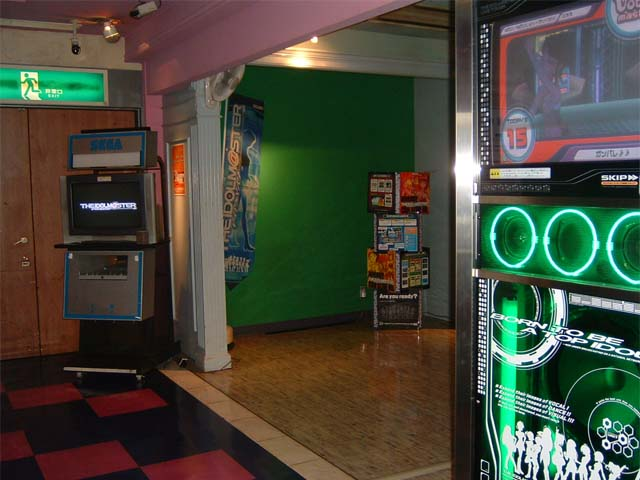 
この店の配置なんかは上の写真の通り．サテ4台で，センモニが外にあるという変な配置．あと一台だけプレイ状況が大きな画面に晒されるという「晒し台」がありました．大きな画面というのは写真2枚目の画面右側のものです．もちろん自分は晒し台でプレイしましたよｗ 誰も見てなかったのが勿体無かったですが orz 自分のプレイを見せ付けたかったなぁｗ
とりあえず1クレ分プレイした後は，sue445さんのサポートに徹していました．
コミュニケーションや引退コンサートなんかは全部成功させてあげられたものの，肝心のオーディションで全然勝たせてあげられなくてほんとごめんなさい orz やっぱりギリギリ初心者じゃないような輩は他人にとやかく言えたもんじゃないってことがよく分かりました orz 自粛します．もっと己を磨いてきます．ボーダー読みは難しいですのぅ…
あと，この店は何気にコミュニケーションノートが置いてありませんでした．ダメじゃん．あれはこういうゲームには絶対必要だってｗ
ちなみに「おはよう！！朝ご飯」の振り付けもきちんとやってきたんですが，誰も観客がいないんじゃ，全然おもしろくなかった… orz それはこのあと夜にふちけんさんともう一度行って来た交通センタープラボでも同じでした．ほんと残念．福岡のプロデューサーと交流とりたかったんですがねぇ．
そんで，夕方sue445さんとお別れ．自分はバスで博多へ帰ることにしました．バスは天神〜博多が100円という激安価格だったので（地下鉄は250円）．
で，ふちけんさんと紀伊国屋（交通センタービル）で合流し，ゲーセン，定食屋と巡って，ふちけん邸へ帰ることに．
ゲーセンでふちけんさんが太鼓の達人と虫姫さまで変態プレイを見せ付けてくれましたが，もうなんていうか「今更感」があったので，敢えて詳しくは書くまい(ノ∀｀)
まあようするに難易度「難しい」で普通にノルマクリアしてたとか，マニアックモードで普通にラスボスまで到達してた（残念ながらラスボスは倒せませんでしたが），ってことです．なんていうかあれは俺には無理だｗ というかあの後虫姫さまオリジナルで5面行けるかどうかのヘタレプレイなんぞとてもじゃないですがする気になれませんでした orz …それくらい凄かったってことで(´∀｀)
この日も歩き回って疲れてたのに加え，ふちけんさんがお疲れモードですぐに寝てしまったので，同人誌読み終えてからすぐに寝ました．
さて，21日，いよいよ帰郷の日．
この日の13:50発の飛行機で帰る予定だったので，朝から昼までふちけんさんと一緒に博多駅周辺（と言ってもやっぱり交通センタービルですがｗ）を歩いていました．
ちなみに7Fのゲーマーズで アイマスMASTERPIECE04 をポスターと一緒に入手したり(´∀｀)
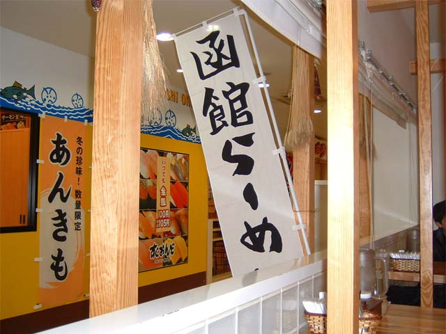
で，何故か朝食兼昼食で函館ラーメンを食べたり．

やよいと一緒に（携帯の画面はデジカメで撮影できませんでした）
そしていよいよふちけんさんともお別れの時が．
ていうかわかさんに会えてねえ！
火曜日も一日中滞在する予定にしていれば会えたんでしょうが，流石にお金がゲフンゲフン
ということでなんかまた心残りな状態で帰郷することになりました(´・ω・｀) しかも福岡はもうなかなか行く予定ないだろうからなぁ… テラ残念ス
それからは福岡空港まで地下鉄で行き，お土産を買って搭乗手続きを済ませ，特になんの事件もなく帰ってこれました．
まあ，かなり楽しい3日を過ごせたと思いますよ（時間にすれば48時間強ですが）．
とりあえず，オフレポはここまでです．最後まで読んでくださったあなた，どうもありがとうございました．
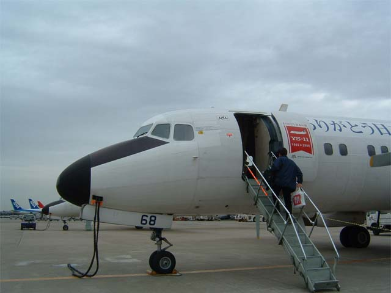 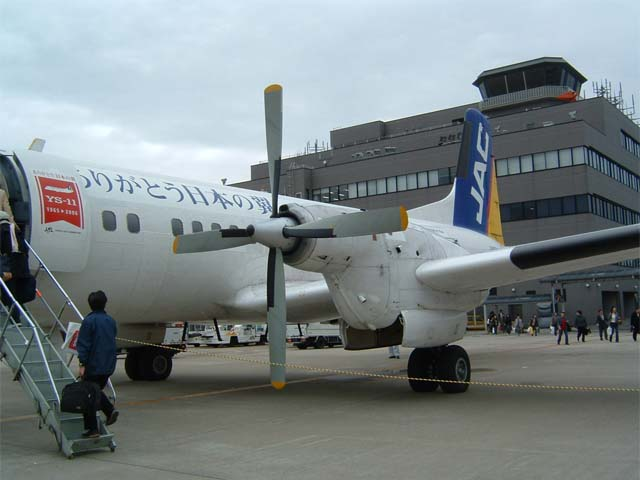
おまけ写真
自分の乗った飛行機，YS11．凄く揺れます．
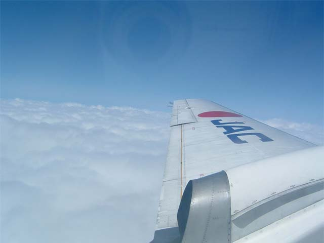  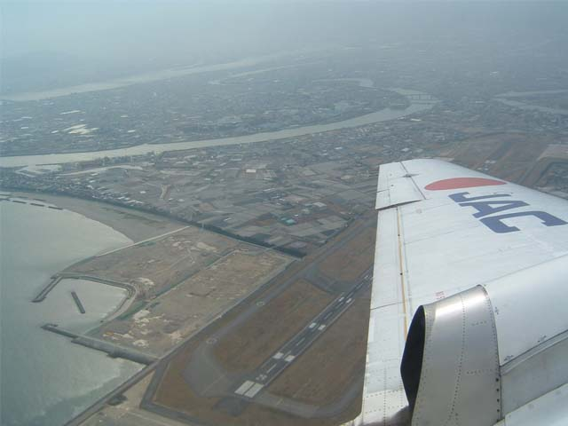
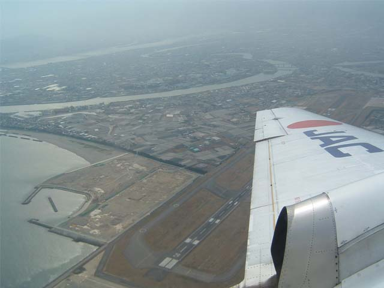
おまけ写真その2
飛行機の窓から撮った写真．三枚目は徳島空港上空です．地元民ならちょっと見てて楽しいかもｗ


{kind=link}
{kind=link}
{kind=link}
{kind=link}
{kind=link}
{kind=link}
{kind=link}
{kind=link}
{kind=link}
{kind=link}
{kind=link}
{kind=link}
{kind=link}
{kind=link}
{kind=link}
{kind=link}
{kind=link}
{kind=link}
{kind=link}
{kind=link}